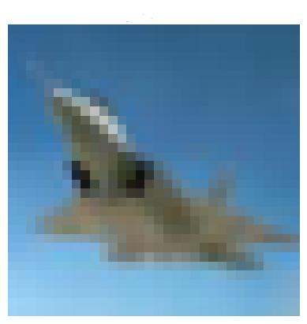
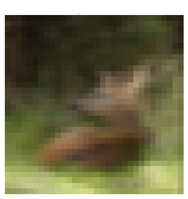
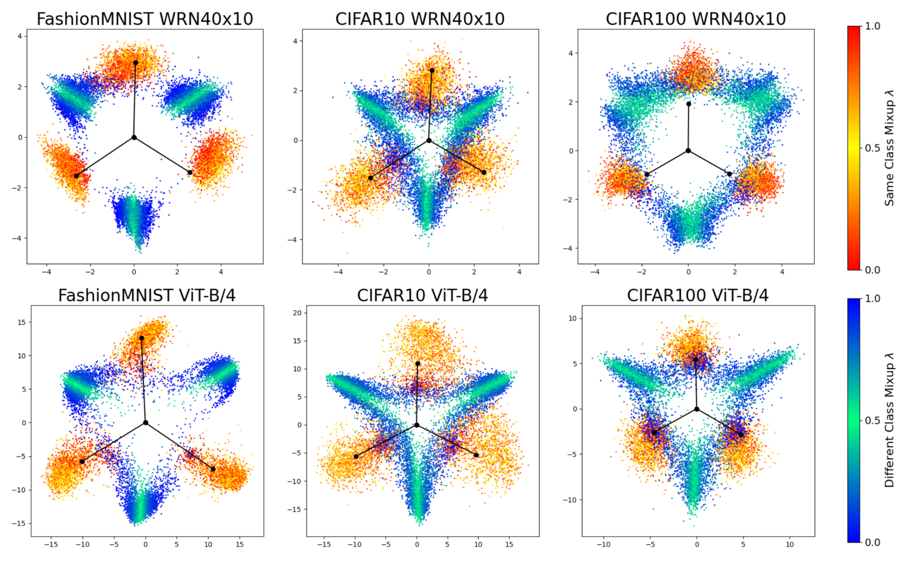

Mixup's Influence on Neural Collapse
This page is a quick explanation for a research project/paper titled
My research on last-layer activations of deep networks is heavily influenced by (my supervisor) Vardan Papyan's work on Neural Collapse.
Mixup
Mixup (Zhang et al.) is a popular data augmentation method that generates new training examples through convex combinations of existing data points and labels. For each mini-batch, a mixup rate \( \lambda \in [0, 1]\) is randomly generated and used as a coefficient for the convex combination of data points and labels. Check out an example below with two examples from the CIFAR10 dataset! Note that as the image changes, so does the label. Using mixup to train deep networks has been shown to improve generalization and calibration, but the underlying mechanisms of what it does is still somewhat of a mystery.
Original Image 1
Label = [1, 0]
Original Image 2
Label = [0, 1]
Mixup Image
Label = [0.50, 0.50]
Neural Collapse

Neural Collapse is an inductive bias in which the last-layer activations and classifiers of the network converge to the geometric configuration of a simplex equiangular tight frame (ETF). This phenomenon reflects the natural tendency of the networks to organize the representations of different classes such that each class’s representations and classifiers become aligned, equinorm, and equiangularly spaced, providing optimal separation in the feature space. Check out the animation made using Vardan's "expert hollywood VFX abilities". It shows a subset of three classes during training. The green spheres represent the simplex ETF structure, red ball-and-sticks represent linear classifiers, blue ball-and-sticks represent class-means, and small blue spheres represent last-layer features.
Mixup's Influence on Neural Collapse
The observed phenomenon of Neural Collapse provides a compelling motivation to explore whether mixup induces alternative geometric configurations and whether those could explain its success. The first part of this project is an extensive empirical study focusing on the last-layer activations of mixup training data (convex combinations of images and targets). The results of this empirical study is that the last-layer activations for mixup training data converge to a specific and unexpeced configuration across various dataset and architecture combinations. Notably, the mixup last-layer activations are not convex comvinations of regular last-layer activations. Instead, activations from mixed-up examples of identical classes align with the classifier, while those from different classes delineate channels along the decision boundary. The plot below has examples of the configuration for a subset of 3 classes! Points mixed-up with the same class are coloured using the red-yellow scale, points mixed-up with a different class are coloured using the blue-green scale, and the respective classifier is plotted in black. You can find more details of the figures in the paper mentioned at the top of the page.
Calibration, Unconstrained Features Model, and More
In addition to discovering the phenomena of last-layer activations of mixup training data collapsing, the project uses the configuration to explain the benefits mixup has on calibration (softmax probabilities being in alignment with true probabilities). In short, we argue that the confidence is being encouraged to align with \(\lambda\), and as the confidence is minimized, features go towards the channels making it more likely for them to fall on the incorrect side of the decision boundary. Thus the true probability is also minimized. Theres a great explanation and diagram in the paper.
The paper also examines the concept of an unconstrained features model. The idea is basically that modern deep networks have so many parameters, they can essentially map images to any feature. Thus the technique focuses on optimizing over the last-layer activations to see if there are any theoretically desirable configurations.